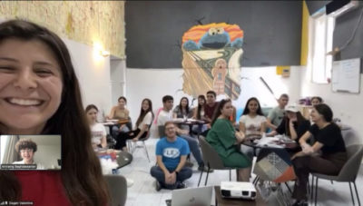
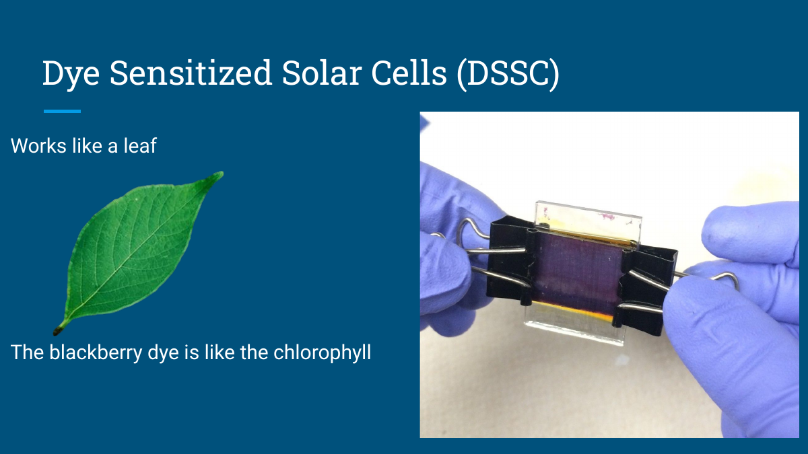
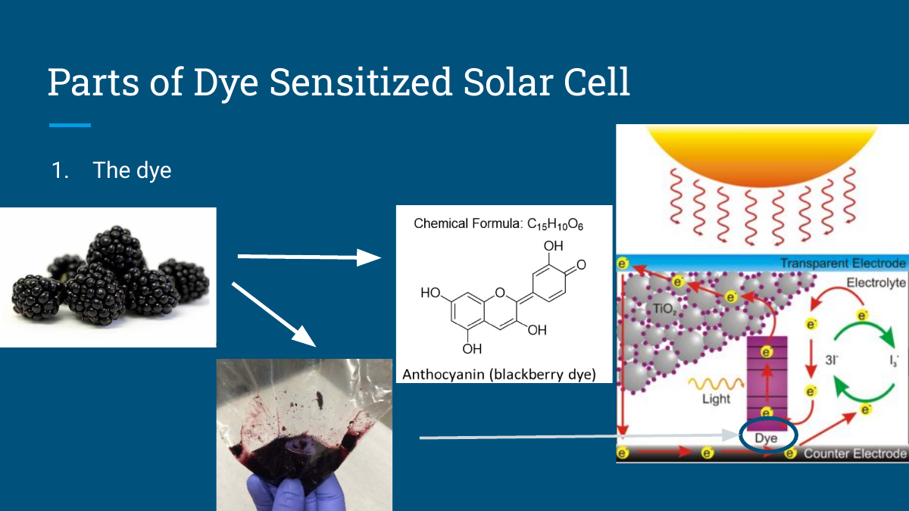
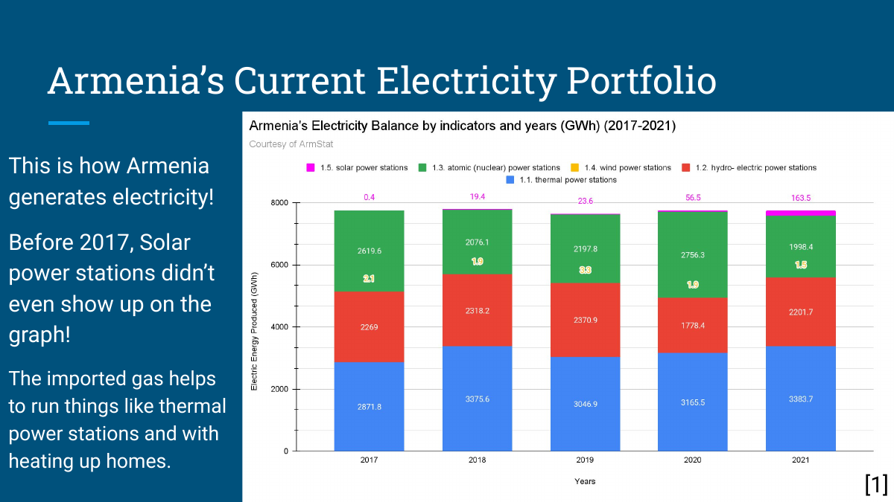

Dye-Sensitized Solar Cell Workshops
I designed and led two virtual and in-person workshops for 20+ rural Armenian students in August 2022 and August 2023. Students built blackberry dye–based solar cells while learning about solar technology, energy policy, and Armenia’s solar development plan. I partnered with MAQOOR, and the workshops were featured in the Armenian Mirror-Spectator.

Making solar energy hands-on
I wanted students to see how a solar cell works by building one themselves. The workshop connected the science behind solar technology with a practical activity and a conversation about renewable energy in Armenia.
Adapting the workshop
For the 2022 virtual workshop, I adapted a solar-cell kit and its instructions to the resources available to students in Ijevan, arranged for materials to reach the classroom, and taught with an interpreter’s help. Students tested their cells in sunlight and measured the electrical output with a multimeter.
Selected teaching slides
These slides from my 2023 workshop connect the solar-cell activity with its underlying science and Armenia’s energy context.






Photo credit
Workshop photo published in the Armenian Mirror-Spectator’s October 30, 2022 feature, “From Great Neck to Ijevan – Bringing Solar Energy Education to Armenia.” The full article is linked below.